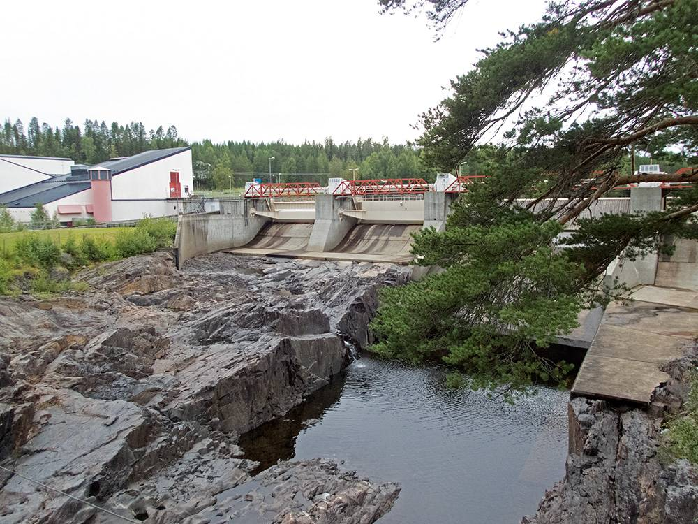

강물로 만든 전기 수익이 시 살림으로…스웨덴 셸레프테오, 시 소유 에너지 공기업 앞세워 수력 2.7TWh로 산업 유치

지역 소비량 1.5배 전력으로 배터리·친환경 항공연료 산업 끌어와…노스볼트 파산 뒤 라이텐이 공장 인수, 시는 해마다 노인 돌봄·청소년 교육 등에 약 1조 원
스웨덴 북부 셸레프테오시가 시 소유 에너지 공기업 '셸레프테오 크라프트'를 중심에 두고 강물로 만든 전기를 기업 유치의 무기로 쓰면서, 회사 수익의 일부를 해마다 시 재정으로 돌려받고 있다. 시는 100년 넘게 셸레프테오강의 물로 전기를 만들어 왔으며, 한 해 수력발전량은 약 2.7TWh로 지역에서 쓰는 전기의 1.5배에 이른다. 아니아 폴 셸레프테오 기업유치 책임자는 전력망에 여유가 있고 화석연료 없이 만든 전기를 경쟁력 있는 값에 댈 수 있다는 점이 전기를 많이 쓰는 기업을 끌어오는 데 유리하다고 설명했다. 시는 2017년 배터리 기업 노스볼트를 유치해 협력업체까지 5,000명 가까이 일하는 생산기지로 키웠지만 노스볼트는 결국 파산했고, 미국 기업 라이텐이 공장을 인수해 청정전력과 새 산업을 다시 잇기로 했으며, 시는 수력 등 재생에너지와 산림자원을 묶어 친환경 항공연료를 만드는 시설 등도 추진하고 있다. 에벨리나 팔레센 부시장은 "매년 회사 수익의 일부가 시에 돌아온다"며 그 덕에 어려운 시기에도 재정을 안정적으로 꾸리고 지역에 큰 투자를 할 수 있었다고 말했고, 시는 해마다 노인 돌봄과 청소년 교육 등에 약 1조 원을 써 스웨덴에서 주민 1인당 투자액이 가장 높은 지역 가운데 하나로 꼽힌다. 최근 한 설문에서 시민 10명 가운데 9명이 살기 좋은 곳이라고 답한 이 도시는, 경북 영양처럼 전기를 많이 만들면서도 환경 부담만 지고 지역 발전으로는 잘 이어지지 못하는 국내 발전 지역과 대비된다.
시민에너지 관점
노르웨이는 수력발전소가 들어선 지자체가 발전량의 일부를 원가 수준에 사들일 권리와 양허 부담금을 법으로 보장해, 강을 내준 지역이 발전소 주인이 아니어도 몫을 챙기게 했고, 셸레프테오는 한 걸음 더 나아가 시가 발전회사 자체를 갖고 그 전기로 일자리를 끌어온다. 유치한 기업이 무너지면 지역이 함께 흔들린다는 걱정이 나올 수 있지만, 노스볼트 파산 뒤에도 발전 자산이 지역 손에 남아 있었기에 새 주인이 공장을 이어받고 다른 산업을 다시 부를 수 있었다. 다만 시가 모두 갖는 공기업은 주민이 직접 지분을 갖는 협동조합과 달라서, 수익이 어디에 쓰이는지 주민이 정하고 확인할 수 있는 장치가 있을 때 비로소 지역 소유의 힘이 주민 삶으로 이어진다. 국내 발전 지역 지자체와 새로 논의되는 지역 에너지공사는 발전 자산을 지역이 소유하는 길을 넓히고, 수익을 주민에게 돌리는 원칙과 주민 참여 통로를 조례에 분명히 적어야 한다.
출처: 포항MBC 2026-11-04 이도은 원문 보기
川の水でつくった電気の収益が市の財政に…スウェーデン・シェレフテオ、市所有のエネルギー公企業を軸に水力2.7TWhで産業誘致
地域消費量の1.5倍の電力で電池・環境配慮型航空燃料の産業を呼び込む…ノースボルト破綻後はライテンが工場を買収、市は毎年高齢者介護・青少年教育などに約1兆ウォン
スウェーデン北部のシェレフテオ市は、市が所有するエネルギー公企業「シェレフテオ・クラフト」を中心に、川の水でつくった電気を企業誘致の武器として使い、会社の収益の一部を毎年市の財政として受け取っている。市は100年以上にわたりシェレフテ川の水で発電してきており、年間の水力発電量は約2.7TWhと、地域で使う電気の1.5倍に達する。アニア・ポール市企業誘致責任者は、送電網に余裕があり、化石燃料を使わずにつくった電気を競争力のある価格で供給できる点が、電力を多く使う企業を呼び込むうえで有利だと説明した。市は2017年に電池メーカーのノースボルトを誘致し、協力会社を含め5,000人近くが働く生産拠点に育てたが、ノースボルトは結局破綻し、米国企業ライテンが工場を買収してクリーン電力と新産業を改めて結びつけることになった。市は水力などの再生可能エネルギーと森林資源を組み合わせて環境配慮型の航空燃料をつくる施設なども進めている。エヴェリーナ・パレセン副市長は「毎年、会社の収益の一部が市に戻ってくる」と述べ、そのおかげで厳しい時期にも財政を安定させ、地域に大きな投資ができたと語った。市は毎年、高齢者介護や青少年教育などに約1兆ウォンを投じており、スウェーデンで住民1人当たりの投資額が最も高い地域の一つとされる。最近のある調査で市民の10人に9人が住みやすい地域だと答えたこの町は、慶尚北道英陽（ヨンヤン）のように電気を多くつくりながら環境の負担だけを負い、地域の発展にはなかなかつながらない韓国の発電地域と対照的だ。
市民エネルギーの視点
ノルウェーは水力発電所が立地する自治体に、発電量の一部を原価水準で買い取る権利と許可負担金を法律で保障し、川を差し出した地域が発電所の持ち主でなくても取り分を得られるようにしている。シェレフテオはさらに一歩進み、市が発電会社そのものを持ち、その電気で雇用を呼び込んでいる。誘致した企業が倒れれば地域も揺らぐという懸念もあり得るが、ノースボルトの破綻後も発電資産が地域の手に残っていたからこそ、新たな所有者が工場を引き継ぎ、別の産業を再び呼び込むことができた。ただし市が全てを持つ公企業は住民が直接持ち分を持つ協同組合とは異なり、収益の使い道を住民が決め、確かめられる仕組みがあって初めて、地域所有の力が住民の暮らしにつながる。韓国の発電地域の自治体や新たに議論されている地域エネルギー公社は、発電資産を地域が所有する道を広げ、収益を住民に還元する原則と住民参加の窓口を条例に明記すべきだ。
出典: 浦項MBC 2026-11-04 イ・ドウン 原文を読む
河水发电的收益回流市财政…瑞典谢莱夫特奥以市属能源公营企业为依托，凭2.7TWh水电招商引资
以相当于本地用电量1.5倍的电力吸引电池和环保航空燃料产业…Northvolt破产后由Lyten收购工厂，市政府每年在养老照护、青少年教育等方面投入约1万亿韩元
瑞典北部的谢莱夫特奥市以市属能源公营企业“谢莱夫特奥电力”（Skellefteå Kraft）为核心，把用河水发出的电作为招商引资的利器，并每年将公司的一部分收益收回市财政。该市用谢莱夫特河的水发电已有100多年，年水力发电量约2.7TWh，相当于本地用电量的1.5倍。谢莱夫特奥市招商负责人阿妮娅·保罗表示，电网供应有余量，又能以有竞争力的价格提供不用化石燃料生产的电力，这在吸引用电大户企业时很有优势。该市2017年引进电池企业Northvolt，使其发展成为连同配套企业在内近5,000人就业的生产基地，但Northvolt最终破产，美国企业Lyten收购了工厂，重新尝试把清洁电力与新产业连接起来；该市还在推进将水电等可再生能源与森林资源相结合、生产环保航空燃料的设施等项目。副市长埃韦利娜·帕勒森表示：“每年公司收益的一部分都会回到市里。”她说，正因如此，市里在困难时期也能保持财政稳定，并对地方进行大规模投资。该市每年在养老照护、青少年教育等方面投入约1万亿韩元，是瑞典人均投资额最高的地区之一。在最近的一项调查中，10名市民中有9人认为这里宜居；与之形成对比的是，韩国庆尚北道英阳等发电地区发电量很大，却只承受环境负担，难以带动地方发展。
市民能源视角
挪威通过法律保障水电站所在地方政府以接近成本的价格购买部分发电量的权利，并收取许可费，让提供河流的地区即使不是电站的所有者也能分得一份；谢莱夫特奥更进一步，由市政府直接拥有发电公司，并用其电力吸引就业。有人可能担心，引进的企业一旦倒下，地方也会跟着动荡；但正是因为Northvolt破产后发电资产仍掌握在当地手中，新的所有者才能接手工厂，地方也能再次吸引其他产业。不过，由市政府全资拥有的公营企业不同于居民直接持股的合作社，只有建立让居民决定并核实收益用途的机制，地方所有的力量才能真正落到居民生活上。韩国发电地区的地方政府以及正在讨论中的地方能源公社，应拓宽发电资产由地方所有的途径，并把收益回馈居民的原则和居民参与渠道明确写入条例。
来源: 浦项MBC 2026-11-04 Lee Do-eun 查看原文
River power profits flow back to the city: Sweden's Skellefteå uses its municipally owned energy company and 2.7 TWh of hydropower to attract industry
Power equal to 1.5 times local consumption draws battery and sustainable aviation fuel projects; after Northvolt's bankruptcy Lyten bought the plant, while the city spends about 1 trillion won a year on elderly care, youth education and more
The northern Swedish municipality of Skellefteå is using electricity generated from its river as a tool to attract business, with the city-owned energy company Skellefteå Kraft at its centre, and receives part of the company's profits back into the municipal budget every year. The city has generated electricity from the Skellefte River for more than 100 years, and its annual hydropower output of about 2.7 TWh is 1.5 times what the area consumes. Ania Paul, who leads business attraction for Skellefteå, said spare grid capacity and the ability to supply fossil-free electricity at competitive prices give the city an advantage in attracting energy-intensive companies. In 2017 the city brought in the battery maker Northvolt, which grew into a production base employing close to 5,000 people including suppliers, but Northvolt eventually went bankrupt and the US company Lyten bought the plant, renewing the effort to link clean power with new industry; the city is also pursuing projects such as a facility to make sustainable aviation fuel by combining hydropower and other renewables with forest resources. "Every year, part of the company's profit comes back to the municipality," said Deputy Mayor Evelina Fahlesson, adding that this has kept the city's finances stable through difficult times and allowed large investments in the community, and the city spends about 1 trillion won a year on elderly care, youth education and other services, making it one of the places in Sweden with the highest investment per resident. In a recent survey nine in ten residents said it was a good place to live, a contrast with Korean generating regions such as Yeongyang in North Gyeongsang Province, which produce large amounts of power but bear the environmental burden with little local development to show for it.
Citizen Energy View
Norway guarantees by law that municipalities hosting hydropower plants can buy part of the output at close to cost and receive licence fees, so that areas that give up their rivers get a share even when they do not own the plant; Skellefteå goes a step further, with the city owning the power company itself and using its electricity to bring in jobs. Some may worry that a region is shaken when a company it attracted collapses, but it was precisely because the generating assets remained in local hands after Northvolt's bankruptcy that a new owner could take over the plant and other industries could be drawn in again. A wholly city-owned company is not the same as a cooperative in which residents hold shares directly, however, and the strength of local ownership reaches people's lives only when residents can decide and check how the profits are used. Local governments in Korea's generating regions, and the regional energy corporations now under discussion, should widen the path to local ownership of generating assets and write into their ordinances both the principle of returning profits to residents and channels for residents to take part.
Source: Pohang MBC 2026-11-04 Lee Do-eun Read the original